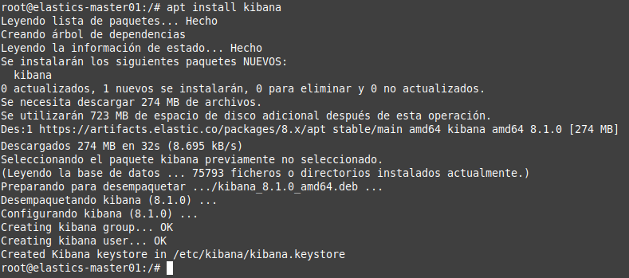

3.1.3 Instalación y configuración de Kibana Dashboard
1. Introducción
Kibana permite analizar los datos almacenados en Elasticsearch. Según la documentación oficial, hay que instalar Kibana después de instalar Elasticsearch. La instalación en este orden, garantiza que los componentes de los que depende cada producto estén correctamente ubicados.
2. Instalación
Como ya se configuraron anteriormente los repositorios de Elastic, simplemente para instalar Kibana 8.1.0 hay que ejecutar el comando siguiente.
root@elastic-master01:/#apt install kibana

Figura 1. Instalación de kibana.
3. Configuración
Kibana está configurado para ejecutarse en localhost:5601 de forma predeterminada. Para permitir el acceso externo, hay que editar el archivo de configuración y reemplazar el valor de server.host con una IP de interfaz, para este escenario, la ip es 192.168.0.254.
root@elastic-master01:/#nano /etc/kibana/kibana.yml
Los parámetros a agregar (descomentar y modifciar) son:
- server.port: 5601. Puerto a la escucha.
- server.host: "192.168.0.254". Dirección ip del servidor.
- server.publicBaseUrl: "http://elastics-master01:80". Se compone del nombre del host servidor y puerto 80.
Figura 2. Fichero de configuración de kibana.
A continuación, hay que generar un token de inscripción para Kibana usando el siguiente comando:
root@elastic-master01:/#/usr/share/elasticsearch/bin/elasticsearch-create-enrollment-token -s kibana
Figura 3. Generación del token.
El token generado es:
eyJ2ZXIiOiI4LjEuMCIsImFkciI6WyIxOTIuMTY4LjAuMjU0OjkyMDAiXSwiZmdyIjoiNmIzMTYzMTQ1N2JiNjBlNmZmYWEwZGZhMzExYTVhNjJjNjE5MGNk
OGE1ZmZiZDJhOWI4YmRiMDFiMTU0YjRmMyIsImtleSI6ImJnbkRxSDhCS0ZicVluMmttWXd5OlAxMGRQemloUzZ5WEY2Q2l2U243N1EifQ==
También hay que generar claves de cifrado de Kibana:
- xpack.encryptedSavedObjects.encryptionKey: se utiliza para cifrar objetos almacenados, como paneles y visualizaciones.
- xpack.reporting.encryptionKey: se utiliza para cifrar informes guardados.
- xpack.security.encryptionKey: se utiliza para cifrar la información de la sesión.
Estos se pueden generar usando el siguiente comando:
root@elastic-master01:/#/usr/share/kibana/bin/kibana-encryption-keys generate
Figura 4. Generación de claves.
Las claves generadas son:
xpack.encryptedSavedObjects.encryptionKey: 529313eca6a8a07064fd400cc0b8a1ee
xpack.reporting.encryptionKey: ca205e846342e870aafd5aac4a16a016
xpack.security.encryptionKey: 1f1d7e19ed0d1ebc36ae17605b239909
A continuación, hay que insertar las claves en el archivo de configuración de Kibana, kibana.yml. Hay que editar el archivo e insertar las claves al final del fichero.
root@elastic-master01:/#nano /etc/kibana/kibana.yml
Figura 5. Añadir claves al fichero de configuración.
Para visualizar el archivo sin líneas de comentarios, el comando es el siguiente:
root@elastic-master01:/#grep -Ev '^#|^$' /etc/kibana/kibana.yml
Figura 6. Listar el fichero de configuración sin comentarios.
Una vez finalizada la instalación y configuración, hay que iniciar y habilitar Kibana 8.1 para que se ejecute en el arranque del sistema.
root@elastic-master01:/#systemctl enable --now kibana
Figura 7. Inicio del servicio kibana.
A continuación, se confirma el estado de Kibana:
root@elastic-master01:/#systemctl status kibana
Figura 8. Estado del servicio kibana.
Desde la salida de estado, se verán estas líneas:
- i Kibana has not been configured.
- Go to http://192.168.0.254:5601/?code=644684 to get started (para cada instalación el código puede ser diferente).
A continuación, se verifica el puerto 5601 si está a la escucha:
root@elastic-master01:/#lsof -i:5601
4. Acceso a Kibana 8.0 Dashboard
Ahora se puede acceder a Kibana 8.1 desde un navegador utilizando la URL proporcionada anteriormente, http://192.168.0.254:5601/?code=644684 (para cada instalación el código puede ser diferente).
Si se tiene configurado el firewall, para permitir conexiones a Kibana hay que abrir el puerto Kibana 8.1, es decir, ajustar las reglas escribiendo:
root@elastic-master01:/#ufw allow 5601/tcp
A continuación, hay que abrir un navegador web mediante la URL http://192.168.0.254:5601/?code=644684, donde,
- 192.168.0.254 y 5601 son la IP:Puerto del servidor Elastic Stack
http://192.168.0.254:5601/?code=644684
Interfaz de Kibana 8.1
Al acceder a la interfaz de Kibana 8.1, en la página de bienvenida, se pide que se configure Elastic para comenzar. Simplemente hay que copiar el token de Kibana generado anteriormente con el comando /usr/share/elasticsearch/bin/elasticsearch-create-enrollment-token -s kibana y pegarlo en el cuadro. Para continuar, hay que pulsar en 'Configure Elastic'.
Verificación de código - Opcional
Una vez se ha pulsado en 'Configure Elastic', el sistema solicita un código de verificación que hay que crear en el servidor, para ello, hay que situarse en el directorio /usr/share/kibana/bin y ejecutar el script kibana-verification-code. La salida del script hay que copiarla en la página donde se solicita el código. Para continuar, hay que pulsar 'Verify'.
root@elastics-master01:/usr/share/kibana/bin#./kibana-verification-code
{kind=link}
{kind=link}
Guardar, iniciar y completar la instalación
Una vez se ha pulsado en 'Verify'., comenzará un proceso de guardado de la configuración, inicio de Elastic y por último completado de la instalación.
Inicio de sesión
A continuación, aparece la página de inicio de sesión donde hay que ingresar las credenciales de usuario de Elastic generadas.
Welcome Elastic
Una vez se han validado las credenciales, aparece una nueva página de bienvenida donde hay que pulsar en 'explore on my own' para pasar al panel de control de Kibana.
Welcome home
Una vez pulsado en explorar por mi cuenta, aparece la página principal donde se tiene acceso a todas las herramientas de kibana.

Estado de Kibana
Para ver el estado de Kibana y consultar la versión, memoria utilizada, etcétera, hay que abrir un navegador y poner la url http://192.168.0.254:5601/status.
5. Referencias
- https://www.elastic.co/guide/en/kibana/master/settings.html
Obra publicada con Licencia Creative Commons Reconocimiento No comercial Compartir igual 4.0